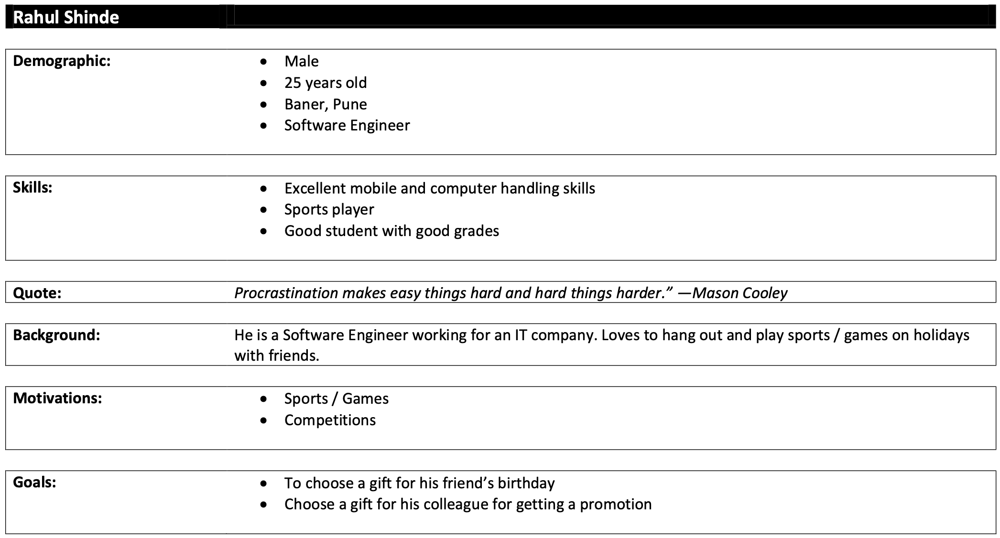
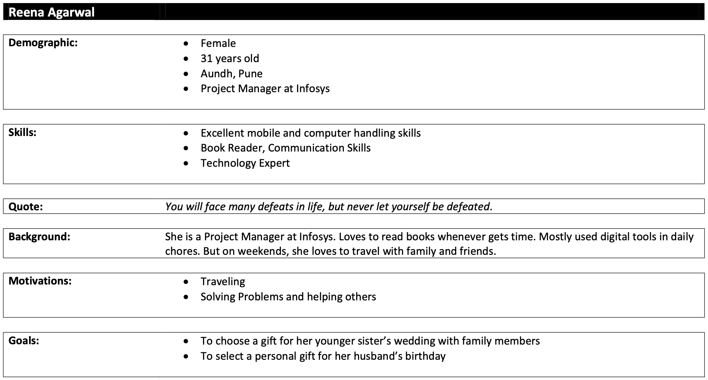
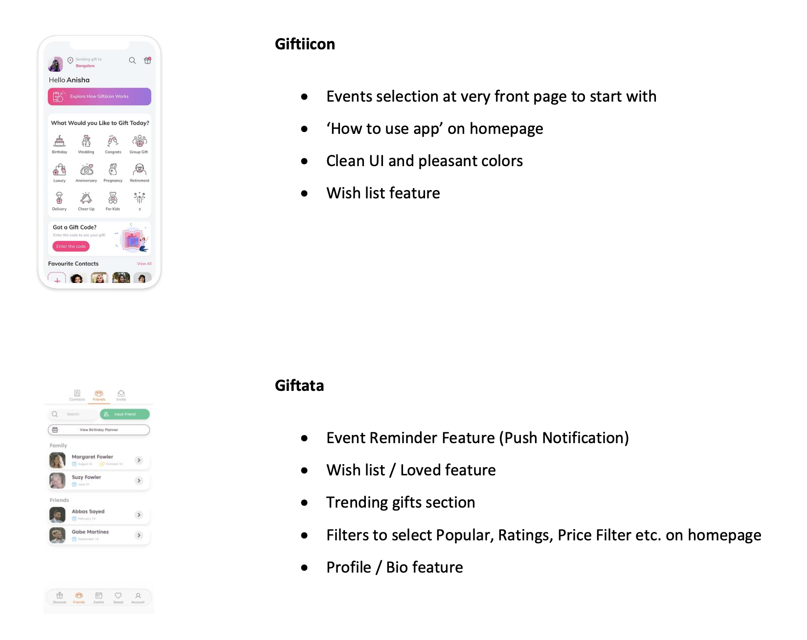
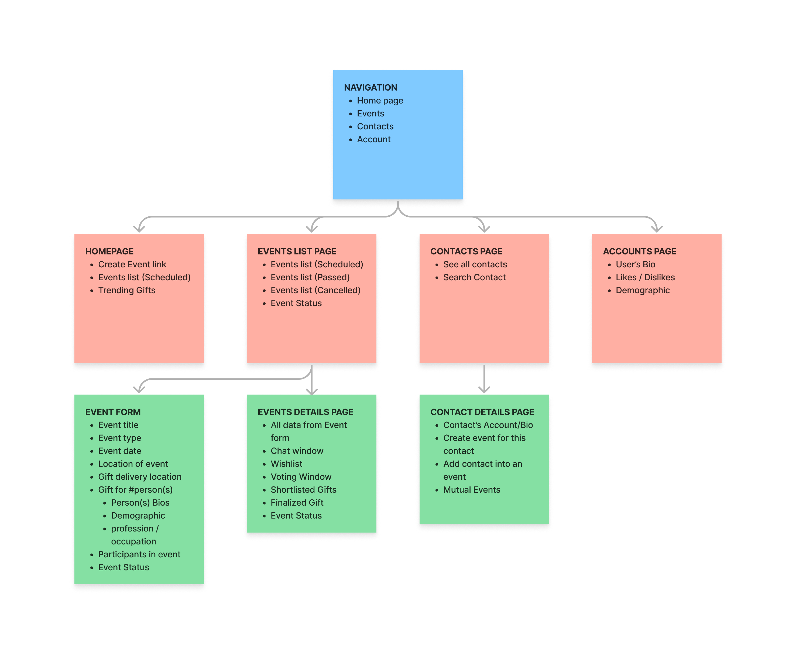
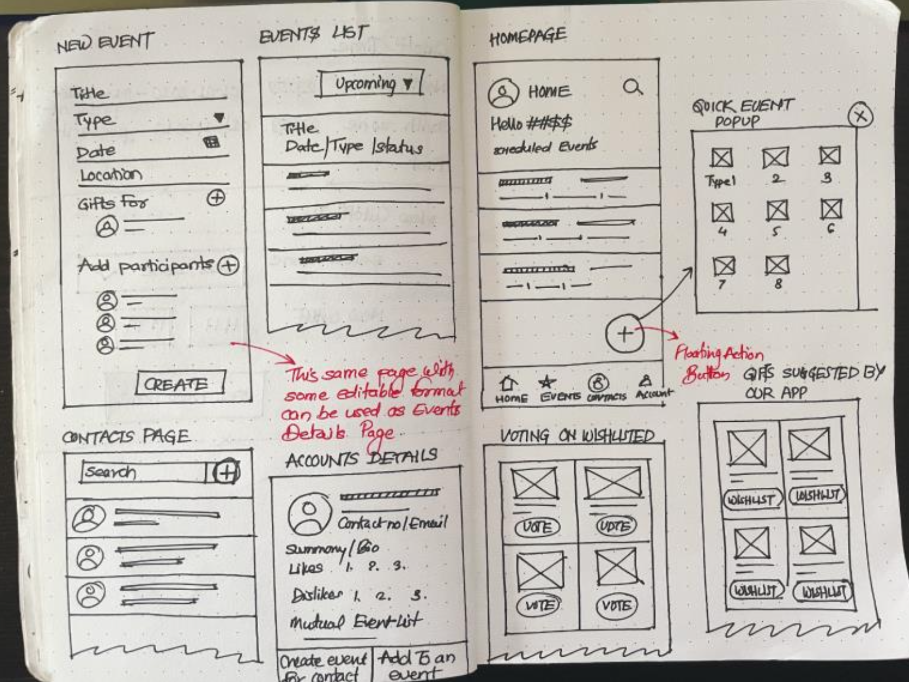
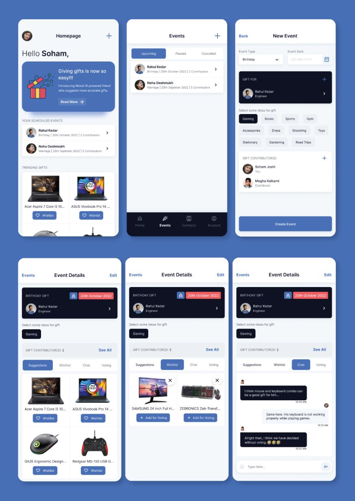
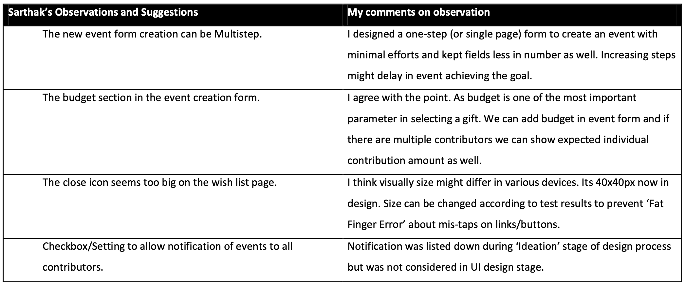

Summary
Gifting is an age-old gesture to create bonds in any relationship and in India; we have a strong culture of gifting on many occasions. Be it birthdays, weddings, anniversaries, personal events or the long list of Indian festivals, we have been gifting on all these occasions to our loved ones, distant cousins, friends, co-workers, neighbors or someone we really care for. When you spend a good time choosing a particular gift and then the person receiving it rejoices with love & excitement because your selection of gift was perfect, you feel so accomplished & satisfied. However, now in the busy life and hectic schedule, it’s difficult to spend so much time choosing a gift and also to guess what the person likes /dislikes or what is on their wish list.
Problem Statement
Design a gifting app that allows users to:
- to be social with friends, family and co-workers
- create and view wish-list
- add/view important events for themselves and others
- choose gifting ideas based on interest, occasions and personal preferences of the people in the network
- many to one gifting flow (imagine a wedding of your friend and you & other friends decide to collaborate and gift something together)
- gift suggestions based on the selection process
Understanding
- An app that will help users to choose a gift for their loved ones
- Users should be able to connect with friends, family and co-workers
- Create and view wish-list
- Add/view important events for themselves and others
- Choose gifting ideas based on interest, occasions and personal preferences of the people in the network
- Many to one gifting flow (imagine a wedding of your friend and you & other friends decide to collaborate and gift something together)
- Gift suggestions based on the selection process
Assumptions
- An app here refers a Native Mobile App and hence solution will be as per the Mobile Device platform/li>
- Targeted user group is 16 to 60 years old
Personas
The age group we considered earlier was 16 to 60 years but to focus we chose to consentrate on two main hypothetical user personas. In this phase we’ll consider for whom we are designing and what problems we are solving. And those will be:
- Rahul Shinde (Software Engineer)
- Reena Agarwal (Project Manager)


Pain Points
The pain points of users are derived from the problem statement itself. Some possible pain points can be as follows:
- Spending a lot of time, sometimes days on deciding a gift
- So many suggestions from friends, family or co-workers. Hence hard to choose a gift that’ll give joy to everyone
- Feeling pressured to choose from selected / wish-listed items
- Tracking events and managing gifts accordingly
- Getting gift suggestions with minimal efforts
Ideas
Some of the ideas that arose in earlier phase are:
- Feature of getting gift suggestion based on
- Personality keywords like smart, sports, geek etc.
- Demographic information
- Profession
- Occasion / event
- Voting on wish-listed gifts
- Area of gift delivery to be selected
- Chat feature inside events
- Personalized and common gift suggestion in events like wedding, place inauguration etc.
Competitive Analysis
Here some good features are listed down after study of some similar apps. These are android apps/iOS apps running in India currently. We’ll consider some of these features that might help us solve pain points and requirements.

Categorization of needed fields
This diagram shows basic organization of pages, flows of app, and fields required for this app. This diagram can be considered as very basic and small picture of navigation design or information architecture.

Wireframing
The goal of wireframing was to try various arrangements of components and to meet basic requirements of user. And the plan was to iterate again to improve design. Brand Guide and Existing Design system is not considered while wireframing.

Visual Design
To make this app look clean and trustworthy, color and fonts are chosen that way. User Interface is inspired from Apple’s Human Interface guidelines for iOS. Some modifications are done to stand it out from the original library.

App Testing
If we test this app with actual requirements it satisfies the requirements for some levels. If we consider 4 important characteristics of design – Usable, Useful, Enjoyable and Equitable, this design might fail in some of these characteristics. And it can be clearly seen that it fails in equitable design as it is hard for users with language other the English to use. Also in this testing, AB testing, heat-maps, color contrast test, feasibility test or heuristic analysis is not done.
Some review from my friend who I thought could be an ideal user:
Tester: Sarthak Doshi (Software Engineer, 25 years old)

While testing it is also found that features which are considered in earlier stages like wireframing, were not considered in UI design stage (Like Contacts Page). Also UIs of some wireframes and features are not designed.